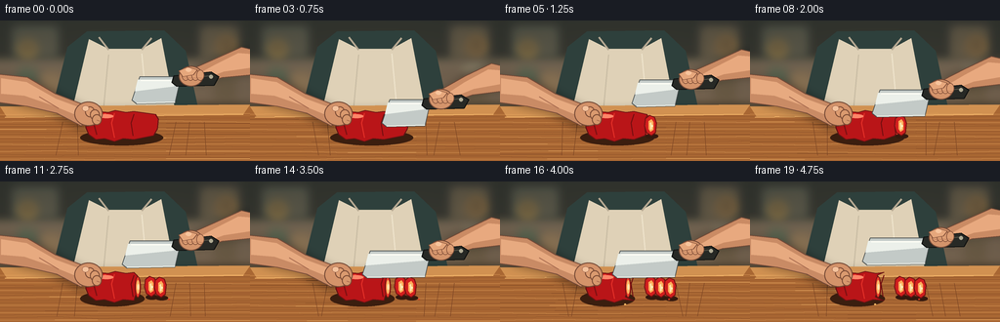
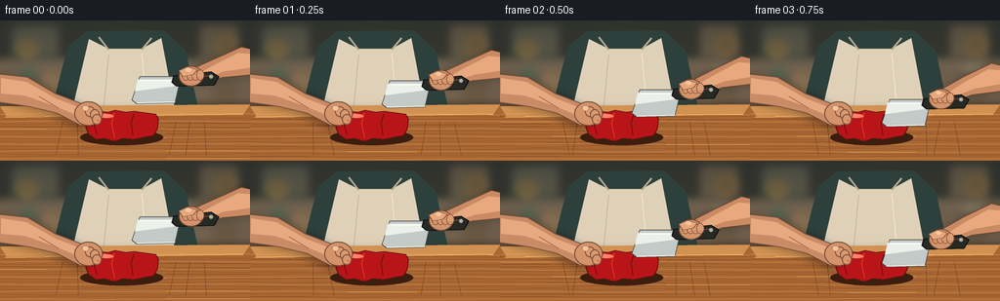
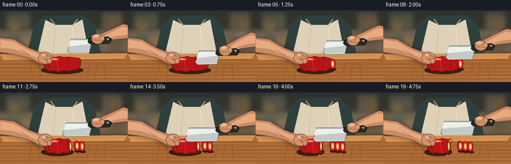

CODING AGENTS AS PIXEL WORLD MODELS
traex/GPT-5.6-Sol · motion_rationality_0026
点击播放 · 原生 RGB 像素
逐轮保存的候选
回放视频、检查图与代码变化。
每份候选均可单独播放。实际图片检查记录在下方工具轨迹中。
候选 01播放与检查图
点击播放 · 原生 RGB 像素


展开代码变化
--- 上一保存版本
+++ 本次保存版本
@@ -0,0 +1,200 @@
+from pathlib import Path
+import math, random
+import numpy as np
+from PIL import Image, ImageDraw, ImageFilter
+import artifact_io
+
+W,H,N = 256,144,20
+S=4
+random.seed(12)
+
+def sc(v): return int(round(v*S))
+def pts(seq): return [(sc(x),sc(y)) for x,y in seq]
+def box(b): return tuple(sc(x) for x in b)
+
+def ellipse(d,b,fill,outline=None,width=1):
+ d.ellipse(box(b), fill=fill, outline=outline, width=sc(width) if outline else 1)
+def poly(d,p,fill,outline=None,width=1):
+ d.polygon(pts(p),fill=fill)
+ if outline: d.line(pts(p+[p[0]]),fill=outline,width=sc(width),joint='curve')
+def line(d,p,fill,width=1): d.line(pts(p),fill=fill,width=sc(width),joint='curve')
+def rr(d,b,r,fill,outline=None,width=1): d.rounded_rectangle(box(b),radius=sc(r),fill=fill,outline=outline,width=sc(width))
+
+def shadow(im, shapes, blur=5, alpha=80):
+ layer=Image.new('RGBA',im.size,(0,0,0,0)); d=ImageDraw.Draw(layer)
+ for kind,data in shapes:
+ if kind=='ellipse': d.ellipse(box(data),fill=(20,12,8,alpha))
+ else: d.polygon(pts(data),fill=(20,12,8,alpha))
+ layer=layer.filter(ImageFilter.GaussianBlur(sc(blur)))
+ im.alpha_composite(layer)
+
+def background():
+ h,w=H*S,W*S
+ yy=np.arange(h)[:,None]/S
+ xx=np.arange(w)[None,:]/S
+ # warm kitchen with depth and subtle vignette
+ base=np.zeros((h,w,4),dtype=np.uint8)
+ top=np.array([73,70,62]); bot=np.array([139,113,83])
+ q=np.clip(yy/144,0,1)[...,None]
+ rgb=top*(1-q)+bot*q
+ rgb=np.broadcast_to(rgb,(h,w,3)).copy()
+ vig=np.sqrt(((xx-128)/155)**2+((yy-72)/105)**2)
+ rgb*=np.clip(1.08-.25*vig[...,None],.72,1)
+ base[...,:3]=np.clip(rgb,0,255); base[...,3]=255
+ im=Image.fromarray(base,'RGBA')
+ # out-of-focus kitchen forms
+ lay=Image.new('RGBA',im.size,(0,0,0,0)); d=ImageDraw.Draw(lay)
+ d.rectangle(box((0,0,256,42)),fill=(45,49,45,190))
+ d.rectangle(box((11,4,61,40)),fill=(54,63,58,180)); d.rectangle(box((15,8,57,35)),fill=(98,104,91,100))
+ d.rectangle(box((202,2,248,44)),fill=(50,54,51,160))
+ d.rectangle(box((207,7,242,38)),fill=(122,111,87,100))
+ ellipse(d,(19,20,38,37),(211,177,91,55)); ellipse(d,(222,16,241,35),(220,164,82,45))
+ # backsplash line / counter
+ d.rectangle(box((0,42,256,46)),fill=(180,161,130,90)); d.rectangle(box((0,46,256,87)),fill=(120,105,88,150))
+ # soft jars
+ rr(d,(18,48,38,82),3,(83,112,91,135)); rr(d,(43,54,62,82),3,(178,147,105,110))
+ rr(d,(218,49,242,84),4,(107,95,75,120)); ellipse(d,(218,45,242,54),(195,190,162,100))
+ lay=lay.filter(ImageFilter.GaussianBlur(sc(4.5))); im.alpha_composite(lay)
+ return im
+
+def draw_person(d):
+ # torso and apron, deliberately softened behind hands
+ poly(d,[(69,27),(89,11),(168,10),(190,31),(203,91),(53,91)],(49,67,64,255))
+ poly(d,[(91,19),(111,29),(145,29),(165,18),(179,91),(74,91)],(218,207,184,255))
+ line(d,[(101,17),(111,30)],(181,169,149,255),2)
+ line(d,[(155,18),(145,30)],(181,169,149,255),2)
+ # apron folds
+ line(d,[(111,35),(106,88)],(193,183,163,150),1)
+ line(d,[(145,34),(150,88)],(235,227,208,160),1)
+
+def draw_board(im,d):
+ shadow(im,[('poly',[(4,94),(247,91),(260,143),(-9,143)])],5,120)
+ poly(d,[(0,88),(256,86),(256,144),(0,144)],(166,104,55,255))
+ poly(d,[(0,88),(256,86),(249,96),(7,99)],(204,145,84,255))
+ # board grain
+ for i in range(19):
+ y=96+i*2.55
+ phase=random.random()*20
+ col=(124,73,39,55) if i%3 else (233,175,105,70)
+ line(d,[(-4,y),(45+phase,y+random.uniform(-1,1)),(100,y+random.uniform(-1,1)),(170,y+random.uniform(-1,1)),(260,y+random.uniform(-1,1))],col,0.45)
+ # cutting scratches
+ for x in [64,79,180,194,209]: line(d,[(x,104),(x+random.randint(-7,7),138)],(119,70,39,80),0.45)
+ line(d,[(5,99),(249,96)],(242,184,111,110),1)
+
+def pepper_shape(right):
+ # pepper lies horizontally, stem on left, lobed silhouette
+ return [(88,101),(91,96),(100,93),(111,94),(118,92),(129,94),(137,93),(right-1,96),
+ (right+2,101),(right+1,111),(right-3,118),(137,122),(126,121),(117,124),(107,121),(98,122),(91,117),(88,110)]
+
+def draw_pepper(d, completed):
+ cut_positions=[153,143,133]
+ right=160 if completed==0 else cut_positions[completed-1]-2
+ # cast shadow
+ ellipse(d,(82,112,right+7,128),(61,34,20,90))
+ poly(d,pepper_shape(right),(181,25,28,255),(103,22,23,255),1)
+ # lobes and glossy modeling
+ line(d,[(98,97),(96,106),(99,117)],(126,20,23,210),1.2)
+ line(d,[(117,95),(114,105),(117,120)],(225,52,45,190),1)
+ line(d,[(137,96),(134,105),(136,118)],(112,18,20,130),1)
+ poly(d,[(99,96),(109,95),(106,99),(99,103),(94,103)],(242,76,60,150))
+ ellipse(d,(102,96,116,100),(255,133,108,105))
+ # green stem on left
+ poly(d,[(90,102),(80,98),(72,100),(80,105),(90,108)],(48,91,43,255),(29,59,27,255),1)
+ line(d,[(78,101),(88,104)],(103,136,68,255),1)
+ # exposed cut face of remaining pepper
+ if completed:
+ x=right
+ ellipse(d,(x-3,97,x+3,119),(228,63,45,255),(112,22,21,255),1)
+ ellipse(d,(x-1.4,101,x+1.7,115),(246,182,104,255))
+ ellipse(d,(x-.5,105,x+1.3,111),(242,229,178,255))
+ # finished slices, each shifts to the right and leans slightly
+ for j in range(completed):
+ x=154+j*10
+ y=108+j*.7
+ # dark grounding shadow
+ ellipse(d,(x-5,y+8,x+8,y+13),(55,29,19,90))
+ # thin red oval section with inner flesh
+ poly(d,[(x-5,y-8),(x-1,y-11),(x+4,y-9),(x+6,y-3),(x+5,y+7),(x+1,y+10),(x-4,y+7),(x-6,y)],
+ (205,35,34,255),(111,21,22,255),1)
+ poly(d,[(x-2,y-5),(x+1,y-7),(x+3,y-4),(x+3,y+4),(x,y+6),(x-2,y+3)],(248,170,92,255))
+ poly(d,[(x-.8,y-3),(x+1,y-4),(x+1.5,y+3),(x,y+4)],(245,226,170,255))
+ ellipse(d,(x+1,y-1,x+2.4,y+1),(254,239,191,255))
+
+def draw_left_arm_hand(im,d):
+ # arm comes from left, steadying hand curls safely behind blade
+ shadow(im,[('poly',[(-8,57),(38,62),(87,88),(96,103),(83,112),(52,96),(15,87)])],4,75)
+ poly(d,[(-9,54),(28,58),(57,75),(88,87),(93,99),(83,108),(58,95),(28,88),(-8,83)],(197,139,104,255),(116,76,59,255),1)
+ # warm top light
+ poly(d,[(1,59),(27,63),(57,80),(84,90),(87,95),(81,98),(54,87),(25,77),(1,75)],(225,169,130,150))
+ # palm
+ ellipse(d,(76,83,105,108),(207,147,109,255),(117,76,58,255),1)
+ # curled fingertips gripping from left, not in cut path
+ for i,(x,y) in enumerate([(91,91),(96,94),(98,99)]):
+ ellipse(d,(x-4,y-3,x+6,y+8),(216-i*3,156-i*2,116-i*2,255),(124,79,58,255),1)
+ line(d,[(x+1,y+3),(x+4,y+4)],(151,91,70,190),.7)
+ # thumbnail
+ ellipse(d,(84,87,91,93),(238,192,158,220),(161,107,83,200),.5)
+ line(d,[(40,78),(60,90)],(161,104,79,140),.7)
+
+def draw_knife_and_right(im,d, lift, cutx):
+ # lift 0 raised, 1 pressed down
+ by=54+24*lift
+ # moving arm behind hand and utensil
+ arm=[(260,30+17*lift),(247,27+17*lift),(220,39+18*lift),(197,49+21*lift),(202,65+20*lift),(228,58+18*lift),(260,55+17*lift)]
+ shadow(im,[('poly',arm)],4,65)
+ poly(d,arm,(198,139,103,255),(112,75,58,255),1)
+ poly(d,[(257,34+17*lift),(244,33+17*lift),(220,45+18*lift),(203,54+20*lift),(207,60+19*lift),(229,52+18*lift),(257,48+17*lift)],(226,168,129,145))
+ # steel chef blade: handle at right, broad blade tapering to tip over cut
+ blade=[(cutx-10,by+3),(177,by+3),(184,by+8),(179,by+30),(cutx-13,by+31),(cutx-18,by+27)]
+ poly(d,blade,(191,200,200,255),(71,77,78,255),.8)
+ # blade cool reflection and razor edge
+ poly(d,[(cutx-12,by+6),(176,by+6),(178,by+13),(cutx-15,by+18)],(230,237,234,210))
+ line(d,[(cutx-13,by+30),(179,by+29)],(245,247,240,255),1)
+ line(d,[(cutx-9,by+7),(174,by+7)],(255,255,250,160),.7)
+ # dark handle
+ poly(d,[(178,by+2),(216,by-2),(224,by+3),(219,by+12),(181,by+13),(176,by+9)],(42,44,41,255),(17,19,18,255),1)
+ line(d,[(184,by+5),(214,by+2)],(91,88,78,255),1)
+ ellipse(d,(214,by+1,218,by+5),(174,171,151,255))
+ # gripping fist overlays handle
+ ellipse(d,(183,by-8,208,by+13),(207,148,110,255),(117,76,58,255),1)
+ # four wrapped fingers
+ for i in range(4):
+ x=186+i*5
+ ellipse(d,(x,by-4,x+8,by+7),(216,157,118,255),(132,84,62,255),.7)
+ line(d,[(x+2,by+4),(x+6,by+4.5)],(154,96,72,160),.5)
+ # thumb along upper handle
+ poly(d,[(183,by-3),(192,by-7),(202,by-4),(198,by+1),(187,by+3)],(224,166,126,255),(132,84,62,255),.7)
+ ellipse(d,(190,by-6,196,by-2),(241,194,158,180))
+
+def frame(k):
+ im=background(); d=ImageDraw.Draw(im,'RGBA')
+ draw_person(d)
+ draw_board(im,d)
+ # 3 deliberate chop cycles, completed slice appears just after bottom contact
+ cycle=min(k//6,2); phase=k%6
+ levels=[0.02,0.20,0.58,1.0,0.58,0.16]
+ lift=levels[phase] if k<18 else (0.10 if k==18 else 0.03)
+ # count cuts after contact frame: contact itself has blade embedded but slice separates next frame
+ completed=min(3, k//6 + (1 if phase>=4 else 0)) if k<18 else 3
+ cut_positions=[153,143,133]
+ cutx=cut_positions[cycle]
+ # food first, then steadying hand, then blade in foreground
+ draw_pepper(d,completed)
+ draw_left_arm_hand(im,d)
+ draw_knife_and_right(im,d,lift,cutx)
+ # a few pepper droplets/crumbs after cuts
+ if completed>=2:
+ ellipse(d,(172,120,174,121.2),(220,62,39,220))
+ if completed>=3:
+ ellipse(d,(127,125,129,126.5),(239,185,103,220))
+ # gentle photographic finish
+ im=im.convert('RGB').resize((W,H),Image.Resampling.LANCZOS)
+ arr=np.asarray(im).astype(np.float32)
+ # mild contrast and warm highlight
+ arr=(arr-128)*1.035+128
+ arr[...,0]*=1.012; arr[...,2]*=.985
+ return np.clip(arr,0,255).astype(np.uint8)
+
+frames=np.stack([frame(i) for i in range(N)])
+artifact_io.save(frames,Path(__file__).resolve().parent)
+print('saved',frames.shape,frames.dtype)
候选 02播放与检查图
点击播放 · 原生 RGB 像素

展开代码变化
--- 上一保存版本
+++ 本次保存版本
@@ -167,6 +167,9 @@
ellipse(d,(190,by-6,196,by-2),(241,194,158,180))
def frame(k):
+ # Keep the board's procedural grain locked to the surface instead of
+ # letting it shimmer between frames.
+ random.seed(12)
im=background(); d=ImageDraw.Draw(im,'RGBA')
draw_person(d)
draw_board(im,d)
可观测工具轨迹
实际执行的命令与返回图片。
命令 1exit 0
/bin/bash -lc "cat prompt.txt && printf '\\n---RULES---\\n' && cat GENERATION_RULES.md && printf '\\n---SPEC---\\n' && cat task_spec.json"
命令 2exit 0
/bin/bash -lc "find . -maxdepth 2 -type f -printf '%p\\n' | sort && printf '\\nTools:\\n' && command -v ffmpeg || true && command -v python3 || true"
命令 3exit 0
/bin/bash -lc 'cat artifact_io.py'
命令 4exit 0
/bin/bash -lc "cat > generate.py <<'PY'
from pathlib import Path
import math, random
import numpy as np
from PIL import Image, ImageDraw, ImageFilter
import artifact_io
W,H,N = 256,144,20
S=4
random.seed(12)
def sc(v): return int(round(v*S))
def pts(seq): return [(sc(x),sc(y)) for x,y in seq]
def box(b): return tuple(sc(x) for x in b)
def ellipse(d,b,fill,outline=None,width=1):
d.ellipse(box(b), fill=fill, outline=outline, width=sc(width) if outline else 1)
def poly(d,p,fill,outline=None,width=1):
d.polygon(pts(p),fill=fill)
if outline: d.line(pts(p+[p[0]]),fill=outline,width=sc(width),joint='curve')
def line(d,p,fill,width=1): d.line(pts(p),fill=fill,width=sc(width),joint='curve')
def rr(d,b,r,fill,outline=None,width=1): d.rounded_rectangle(box(b),radius=sc(r),fill=fill,outline=outline,width=sc(width))
def shadow(im, shapes, blur=5, alpha=80):
layer=Image.new('RGBA',im.size,(0,0,0,0)); d=ImageDraw.Draw(layer)
for kind,data in shapes:
if kind=='ellipse': d.ellipse(box(data),fill=(20,12,8,alpha))
else: d.polygon(pts(data),fill=(20,12,8,alpha))
layer=layer.filter(ImageFilter.GaussianBlur(sc(blur)))
im.alpha_composite(layer)
def background():
h,w=H*S,W*S
yy=np.arange(h)[:,None]/S
xx=np.arange(w)[None,:]/S
# warm kitchen with depth and subtle vignette
base=np.zeros((h,w,4),dtype=np.uint8)
top=np.array([73,70,62]); bot=np.array([139,113,83])
q=np.clip(yy/144,0,1)[...,None]
rgb=top*(1-q)+bot*q
rgb=np.broadcast_to(rgb,(h,w,3)).copy()
vig=np.sqrt(((xx-128)/155)**2+((yy-72)/105)**2)
rgb*=np.clip(1.08-.25*vig[...,None],.72,1)
base[...,:3]=np.clip(rgb,0,255); base[...,3]=255
im=Image.fromarray(base,'RGBA')
# out-of-focus kitchen forms
lay=Image.new('RGBA',im.size,(0,0,0,0)); d=ImageDraw.Draw(lay)
d.rectangle(box((0,0,256,42)),fill=(45,49,45,190))
d.rectangle(box((11,4,61,40)),fill=(54,63,58,180)); d.rectangle(box((15,8,57,35)),fill=(98,104,91,100))
d.rectangle(box((202,2,248,44)),fill=(50,54,51,160))
d.rectangle(box((207,7,242,38)),fill=(122,111,87,100))
ellipse(d,(19,20,38,37),(211,177,91,55)); ellipse(d,(222,16,241,35),(220,164,82,45))
# backsplash line / counter
d.rectangle(box((0,42,256,46)),fill=(180,161,130,90)); d.rectangle(box((0,46,256,87)),fill=(120,105,88,150))
# soft jars
rr(d,(18,48,38,82),3,(83,112,91,135)); rr(d,(43,54,62,82),3,(178,147,105,110))
rr(d,(218,49,242,84),4,(107,95,75,120)); ellipse(d,(218,45,242,54),(195,190,162,100))
lay=lay.filter(ImageFilter.GaussianBlur(sc(4.5))); im.alpha_composite(lay)
return im
def draw_person(d):
# torso and apron, deliberately softened behind hands
poly(d,[(69,27),(89,11),(168,10),(190,31),(203,91),(53,91)],(49,67,64,255))
poly(d,[(91,19),(111,29),(145,29),(165,18),(179,91),(74,91)],(218,207,184,255))
line(d,[(101,17),(111,30)],(181,169,149,255),2)
line(d,[(155,18),(145,30)],(181,169,149,255),2)
# apron folds
line(d,[(111,35),(106,88)],(193,183,163,150),1)
line(d,[(145,34),(150,88)],(235,227,208,160),1)
def draw_board(im,d):
shadow(im,[('poly',[(4,94),(247,91),(260,143),(-9,143)])],5,120)
poly(d,[(0,88),(256,86),(256,144),(0,144)],(166,104,55,255))
poly(d,[(0,88),(256,86),(249,96),(7,99)],(204,145,84,255))
# board grain
for i in range(19):
y=96+i*2.55
phase=random.random()*20
col=(124,73,39,55) if i%3 else (233,175,105,70)
line(d,[(-4,y),(45+phase,y+random.uniform(-1,1)),(100,y+random.uniform(-1,1)),(170,y+random.uniform(-1,1)),(260,y+random.uniform(-1,1))],col,0.45)
# cutting scratches
for x in [64,79,180,194,209]: line(d,[(x,104),(x+random.randint(-7,7),138)],(119,70,39,80),0.45)
line(d,[(5,99),(249,96)],(242,184,111,110),1)
def pepper_shape(right):
# pepper lies horizontally, stem on left, lobed silhouette
return [(88,101),(91,96),(100,93),(111,94),(118,92),(129,94),(137,93),(right-1,96),
(right+2,101),(right+1,111),(right-3,118),(137,122),(126,121),(117,124),(107,121),(98,122),(91,117),(88,110)]
def draw_pepper(d, completed):
cut_positions=[153,143,133]
right=160 if completed==0 else cut_positions[completed-1]-2
# cast shadow
ellipse(d,(82,112,right+7,128),(61,34,20,90))
poly(d,pepper_shape(right),(181,25,28,255),(103,22,23,255),1)
# lobes and glossy modeling
line(d,[(98,97),(96,106),(99,117)],(126,20,23,210),1.2)
line(d,[(117,95),(114,105),(117,120)],(225,52,45,190),1)
line(d,[(137,96),(134,105),(136,118)],(112,18,20,130),1)
poly(d,[(99,96),(109,95),(106,99),(99,103),(94,103)],(242,76,60,150))
ellipse(d,(102,96,116,100),(255,133,108,105))
# green stem on left
poly(d,[(90,102),(80,98),(72,100),(80,105),(90,108)],(48,91,43,255),(29,59,27,255),1)
line(d,[(78,101),(88,104)],(103,136,68,255),1)
# exposed cut face of remaining pepper
if completed:
x=right
ellipse(d,(x-3,97,x+3,119),(228,63,45,255),(112,22,21,255),1)
ellipse(d,(x-1.4,101,x+1.7,115),(246,182,104,255))
ellipse(d,(x-.5,105,x+1.3,111),(242,229,178,255))
# finished slices, each shifts to the right and leans slightly
for j in range(completed):
x=154+j*10
y=108+j*.7
# dark grounding shadow
ellipse(d,(x-5,y+8,x+8,y+13),(55,29,19,90))
# thin red oval section with inner flesh
poly(d,[(x-5,y-8),(x-1,y-11),(x+4,y-9),(x+6,y-3),(x+5,y+7),(x+1,y+10),(x-4,y+7),(x-6,y)],
(205,35,34,255),(111,21,22,255),1)
poly(d,[(x-2,y-5),(x+1,y-7),(x+3,y-4),(x+3,y+4),(x,y+6),(x-2,y+3)],(248,170,92,255))
poly(d,[(x-.8,y-3),(x+1,y-4),(x+1.5,y+3),(x,y+4)],(245,226,170,255))
ellipse(d,(x+1,y-1,x+2.4,y+1),(254,239,191,255))
def draw_left_arm_hand(im,d):
# arm comes from left, steadying hand curls safely behind blade
shadow(im,[('poly',[(-8,57),(38,62),(87,88),(96,103),(83,112),(52,96),(15,87)])],4,75)
poly(d,[(-9,54),(28,58),(57,75),(88,87),(93,99),(83,108),(58,95),(28,88),(-8,83)],(197,139,104,255),(116,76,59,255),1)
# warm top light
poly(d,[(1,59),(27,63),(57,80),(84,90),(87,95),(81,98),(54,87),(25,77),(1,75)],(225,169,130,150))
# palm
ellipse(d,(76,83,105,108),(207,147,109,255),(117,76,58,255),1)
# curled fingertips gripping from left, not in cut path
for i,(x,y) in enumerate([(91,91),(96,94),(98,99)]):
ellipse(d,(x-4,y-3,x+6,y+8),(216-i*3,156-i*2,116-i*2,255),(124,79,58,255),1)
line(d,[(x+1,y+3),(x+4,y+4)],(151,91,70,190),.7)
# thumbnail
ellipse(d,(84,87,91,93),(238,192,158,220),(161,107,83,200),.5)
line(d,[(40,78),(60,90)],(161,104,79,140),.7)
def draw_knife_and_right(im,d, lift, cutx):
# lift 0 raised, 1 pressed down
by=54+24*lift
# moving arm behind hand and utensil
arm=[(260,30+17*lift),(247,27+17*lift),(220,39+18*lift),(197,49+21*lift),(202,65+20*lift),(228,58+18*lift),(260,55+17*lift)]
shadow(im,[('poly',arm)],4,65)
poly(d,arm,(198,139,103,255),(112,75,58,255),1)
poly(d,[(257,34+17*lift),(244,33+17*lift),(220,45+18*lift),(203,54+20*lift),(207,60+19*lift),(229,52+18*lift),(257,48+17*lift)],(226,168,129,145))
# steel chef blade: handle at right, broad blade tapering to tip over cut
blade=[(cutx-10,by+3),(177,by+3),(184,by+8),(179,by+30),(cutx-13,by+31),(cutx-18,by+27)]
poly(d,blade,(191,200,200,255),(71,77,78,255),.8)
# blade cool reflection and razor edge
poly(d,[(cutx-12,by+6),(176,by+6),(178,by+13),(cutx-15,by+18)],(230,237,234,210))
line(d,[(cutx-13,by+30),(179,by+29)],(245,247,240,255),1)
line(d,[(cutx-9,by+7),(174,by+7)],(255,255,250,160),.7)
# dark handle
poly(d,[(178,by+2),(216,by-2),(224,by+3),(219,by+12),(181,by+13),(176,by+9)],(42,44,41,255),(17,19,18,255),1)
line(d,[(184,by+5),(214,by+2)],(91,88,78,255),1)
ellipse(d,(214,by+1,218,by+5),(174,171,151,255))
# gripping fist overlays handle
ellipse(d,(183,by-8,208,by+13),(207,148,110,255),(117,76,58,255),1)
# four wrapped fingers
for i in range(4):
x=186+i*5
ellipse(d,(x,by-4,x+8,by+7),(216,157,118,255),(132,84,62,255),.7)
line(d,[(x+2,by+4),(x+6,by+4.5)],(154,96,72,160),.5)
# thumb along upper handle
poly(d,[(183,by-3),(192,by-7),(202,by-4),(198,by+1),(187,by+3)],(224,166,126,255),(132,84,62,255),.7)
ellipse(d,(190,by-6,196,by-2),(241,194,158,180))
def frame(k):
im=background(); d=ImageDraw.Draw(im,'RGBA')
draw_person(d)
draw_board(im,d)
# 3 deliberate chop cycles, completed slice appears just after bottom contact
cycle=min(k//6,2); phase=k%6
levels=[0.02,0.20,0.58,1.0,0.58,0.16]
lift=levels[phase] if k<18 else (0.10 if k==18 else 0.03)
# count cuts after contact frame: contact itself has blade embedded but slice separates next frame
completed=min(3, k//6 + (1 if phase>=4 else 0)) if k<18 else 3
cut_positions=[153,143,133]
cutx=cut_positions[cycle]
# food first, then steadying hand, then blade in foreground
draw_pepper(d,completed)
draw_left_arm_hand(im,d)
draw_knife_and_right(im,d,lift,cutx)
# a few pepper droplets/crumbs after cuts
if completed>=2:
ellipse(d,(172,120,174,121.2),(220,62,39,220))
if completed>=3:
ellipse(d,(127,125,129,126.5),(239,185,103,220))
# gentle photographic finish
im=im.convert('RGB').resize((W,H),Image.Resampling.LANCZOS)
arr=np.asarray(im).astype(np.float32)
# mild contrast and warm highlight
arr=(arr-128)*1.035+128
arr[...,0]*=1.012; arr[...,2]*=.985
return np.clip(arr,0,255).astype(np.uint8)
frames=np.stack([frame(i) for i in range(N)])
artifact_io.save(frames,Path(__file__).resolve().parent)
print('saved',frames.shape,frames.dtype)
PY
python3 generate.py
ls -lh pixels.npz inspection.png index.html frames/00.png frames/19.png"命令 5exit 0
/bin/bash -lc "python3 generate.py && python3 - <<'PY'
import numpy as np
from PIL import Image
from pathlib import Path
f=np.stack([np.asarray(Image.open(f'frames/{i:02d}.png')) for i in range(20)])
print('shape/dtype/range:', f.shape,f.dtype,f.min(),f.max())
print('mean frame deltas:', np.mean(abs(np.diff(f.astype(float),axis=0)),axis=(1,2,3)).round(2).tolist())
print('artifacts:', all(Path(x).exists() for x in ['pixels.npz','inspection.png','transition_check.png','index.html']))
PY"保存候选 2 份；完成命令 5 次；可验证图片返回 0 张。原始 API 响应与完整日志保留在本地。